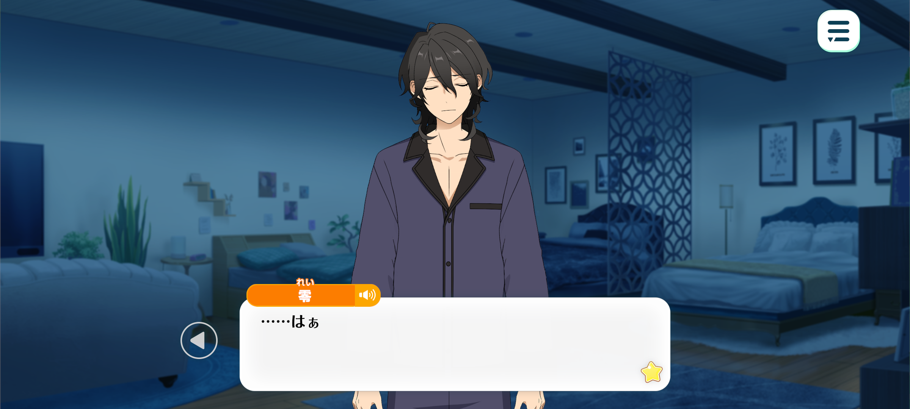
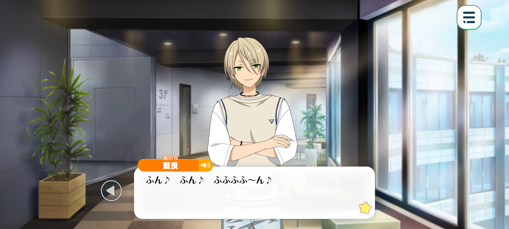
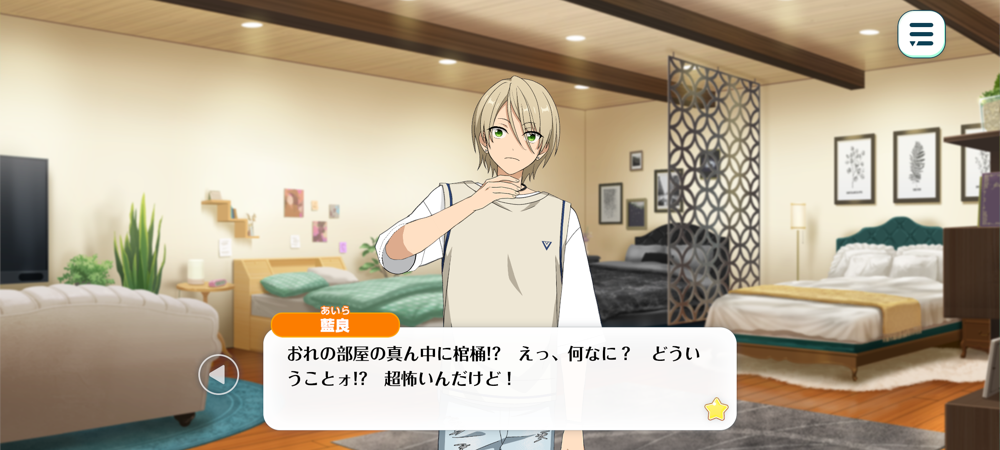
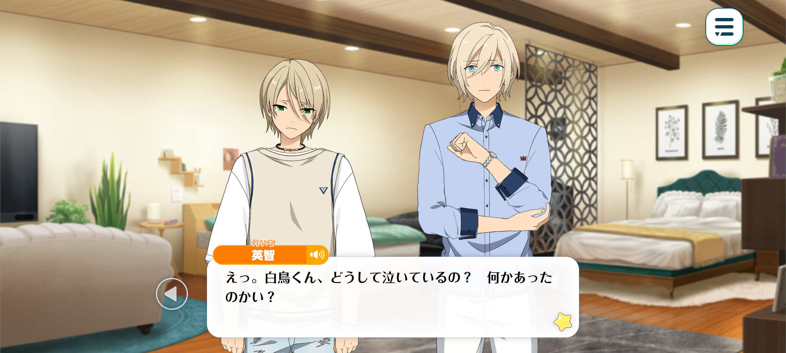
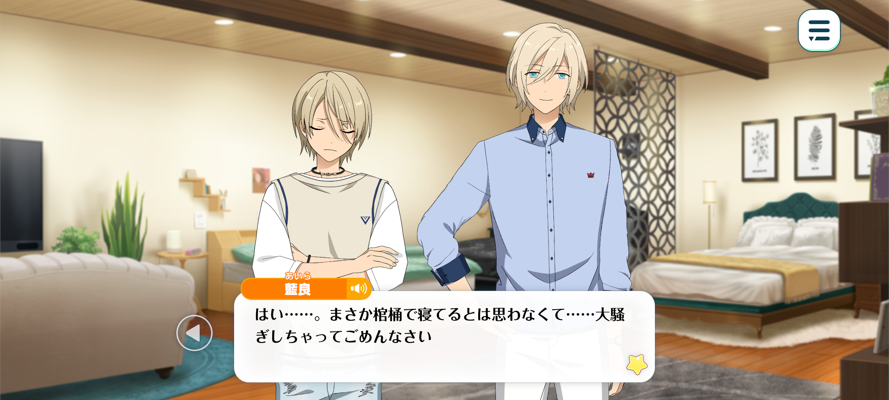
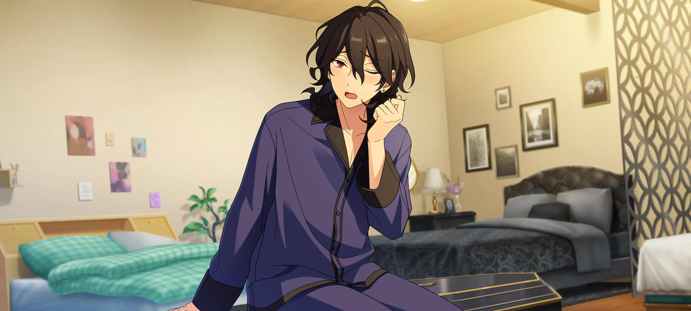
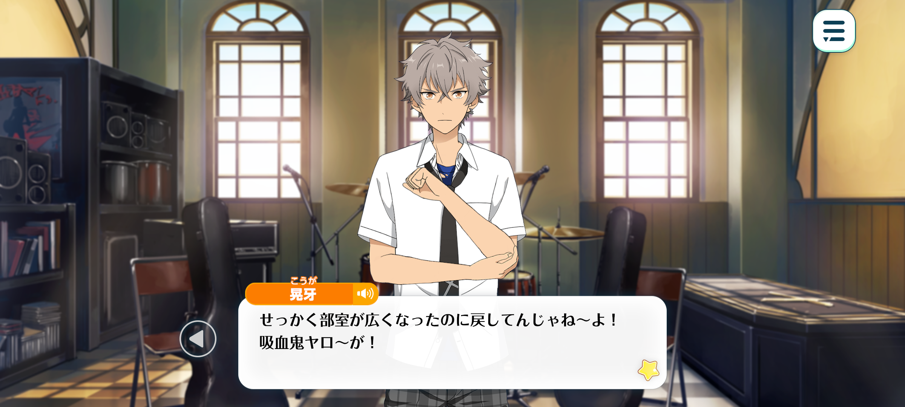

Coffin Dilemma


Season: Summer

Rei: Nng~...
...(Tossing and turning)
...Sigh.
Time: A couple of days later

Aira: Hmhmm ♪ hmhm ♪ hmmhmhmm~♪
Ehehehe ♪ This little box fits juuust right in my hands ♪
I can't believe I actually managed to snag one of that shop's limited-edition rare cheesecakes! They're always sold out by the time I get there, no matter how hard I try. Today’s my lucky day!
I'll hurry back to my room, brew myself some delicious tea... and spend a blissful little while savouring every last bite~♪
I’m hooome~—
UwaAAA!? Wh-what the!?
There's a coffin in the middle of my room!? Huh!? What, what!? What's going on!? This is seriously freaking me out!
Ehhh~... I was on cloud nine just a moment ago... How did things take such a creepy turn all of a sudden...?
...Mmm. What should I do about this?
I've had a good look all at it, but there's nothing particularly unusual. It's just an ordinary coffin.
Well, having a coffin in here at all is already pretty abnormal...
Alright...! I'm not going to get anywhere just standing here and staring at it. It's seriously terrifying, but I guess I'll have to check what's inside...!
Maybe it's just someone's idea of a really twisted prank——
Rei: ...
Aira: ...

Eichi: I’m back.
Aira: Ugh... W-Waaah... sniff…
Eichi: Hm? Shiratori-kun, why are you crying? What’s the matter?
Aira: Sniff… T-Tenshouin-senpai… sob...Sa-Sakuma-senpai has…diiiiieeeeeedddd!
Eichi: Sakuma-senpai...? You mean that Sakuma-kun? Surely there must be some sort of mistake.
I could perhaps understand if it were someone as frail as myself, but I find it hard to believe that someone like Sakuma-kun, who looks as though he could survive just about anything, would actually die.
Aira: It’s the truth…! I saw with my own eyes. He’s lying peacefully in that coffin…! Sniff…
Eichi: ...Now that you mention it, there's something in this room that I'm rather accustomed to seeing at the academy.

Rei: …Hnng?
You've been making quite a racket. Could you keep it down a little...?
Aira: Gyaaaaaa!? A zombie!? Sakuma-senpai, please just quietly go to heaven like you’re supposed to~!
Time: A few moments later

Eichi: Are you feeling better now, Shiratori-kun?
Aira: Yes... I-I just never imagined he'd actually be sleeping in the coffin... I'm really sorry for making such a fuss.
Eichi: Good grief. I can't exactly blame Shiratori-kun for getting the wrong idea. But I do wish you'd realise just how unusual, and frankly bizarre, that habit of yours is, Sakuma-kun.
Rei: Dear me. It seems I've given Shiratori-kun quite the fright. My apologies for startling you.
Eichi: But you've been sleeping in a bed ever since you moved into the dorms, haven't you? What made you go back to sleeping in your coffin?
Rei: Well, you see... I've actually been having trouble falling asleep lately. And even when morning comes, I haven't been waking up feeling particularly refreshed.
Eichi: You've been having trouble sleeping...?
Rei: Precisely! Even I've been making an effort to do without my coffin ever since we started living together, you know?
I have to travel for work and shoot on location from time to time, after all. It's hardly practical to lug my coffin along to every filming location! So I've been doing my best to get accustomed to sleeping in a bed... but...

Wherever I go, it's beds, beds, and more beds...! Everywhere I turn, all I ever find are beds. And with so much space around me, I can't help but feel terribly exposed! If anything, it's only been adding to my stress~...
I longed to feel that familiar sense of confinement again... To be gently enveloped in that cosy little space, as though my coffin were holding me in its embrace...! Woe is me~...
Aira: Sakuma-senpai… you poor thing…
Eichi: Shiratori-kun, don't let him fool you.
Doesn't it bother you at all, Sakuma-kun? Taking advantage of such an innocent, impressionable junior?
Rei: Oh? That's rather rich coming from you, Tenshouin-kun...
Eichi: At any rate, there's no point trying to weasel your way out of this with that little act of yours. It doesn't fool me in the slightest. And really, is it so surprising that you'd find beds wherever you go?
If you intend to continue your career as an idol, you really ought to learn to sleep in a bed like everyone else.
More importantly, where on earth did you get this coffin? If I recall correctly, the Light Music Club was keeping it in storage at the academy.
Rei: Indeed. The agency staff couldn't bear to see me looking so utterly exhausted, so they went out of their way to bring it here. I believe they thought I should at least be able to get some proper rest in it.
Eichi: Good grief. Now you're making trouble for the agency staff, too...
Sigh… Well, I take it you managed to get some sleep, at least?
This is a shared dorm room, so I'd rather you didn't leave something this bulky lying around. Could you please take it back where it belongs?
Rei: My, aren't you cold-hearted? You could at least show me a little compassion.
Eichi: If that coffin is still here when I get back, I'll make sure it's disposed of one way or another. I suggest you keep that in mind.
Rei: What a devilish man you are!?

Koga: “‘—And so, since the devilish Tenshouin-kun insisted I return this coffin to the Light Music Club, I've decided to bring it back along with this letter. Yours truly, Sakuma Rei.’ …?”
We finally got the clubroom all cleared out, so don't you dare go bringin’ it back~! You damn vampire!